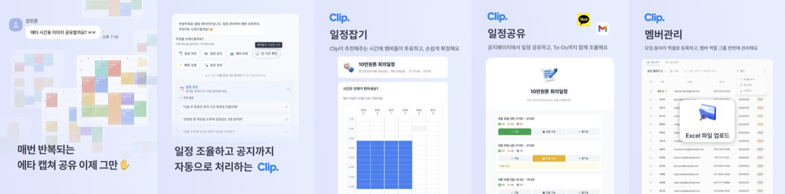
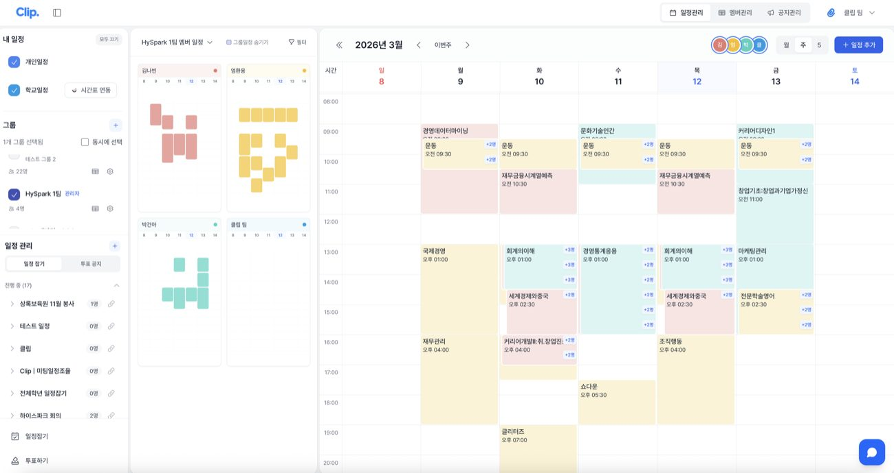
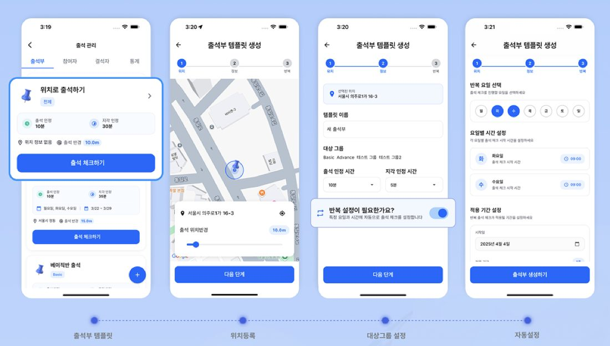
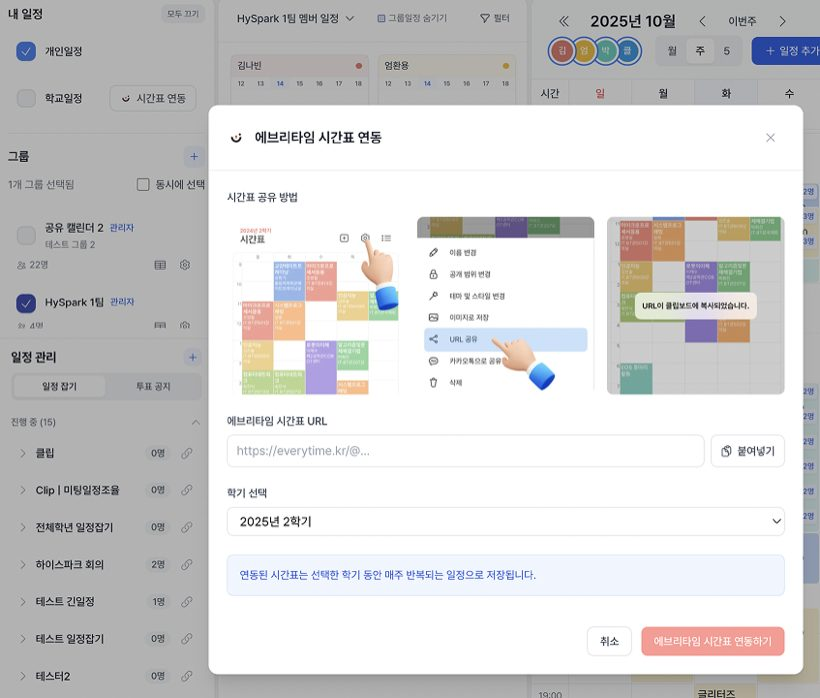
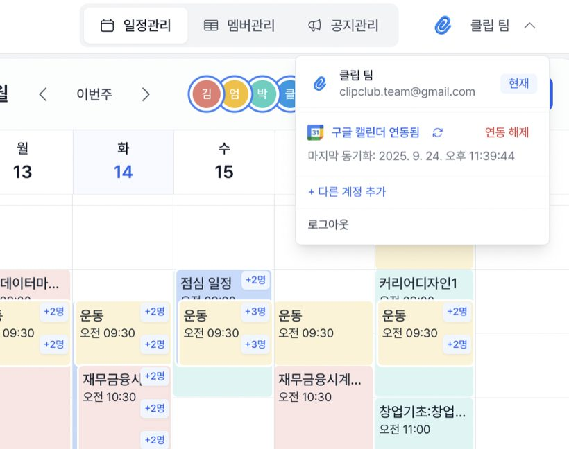
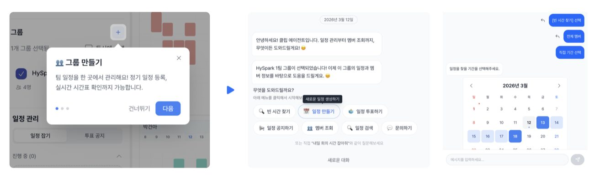

앱 개발 동아리에서 강사와 멘토로 활동하다가, 멘토링 활동으로 실제 쓰이는 제품을 만들어보고 싶었어요. 그렇게 3명이 6개월 동안 동아리 운영 관리 서비스 클립을 만들었어요.
여러 도구와 문서에 흩어진 운영 업무를 하나로 묶겠다는 뜻으로 붙인 이름이었죠. 결론부터 말하면, 그 "하나로 묶는다"가 문제였어요.

운영진 30명에게 물었더니 문제는 분명했어요
동아리를 직접 운영하며 가장 크게 느낀 건 정산과 인수인계였어요. 뒤풀이가 끝날 때마다 새 단체 채팅방을 만들어 참석자를 확인하고 비용을 나눴고, 카드뉴스·면접 자료·공지 템플릿 같은 운영 자료는 담당자가 바뀔 때마다 맥락이 끊겼죠.
문제를 구체화하려고 운영진 약 30명을 인터뷰했어요. 재무 담당자는 매번 참여자를 확인하고 정산하는 게 어렵다고 했고, 공지 담당자는 누가 읽었는지 빠르게 알고 싶어 했어요. 일정 관리, 출석, 과제 제출, 회원 관리까지 담당 업무마다 다른 불편이 나왔고요.
여기서 "문제는 분명히 있다"는 확신을 얻었어요. 그리고 그 확신이 다음 판단을 흐리게 만들었어요.
각자의 불편을 다 풀려다 올인원이 됐어요
처음 만든 건 하나였어요. GPS로 뒤풀이 장소에 있던 사람을 판별해 정산 참여자를 자동으로 뽑는 기능이요. 그다음부터 인터뷰에서 나온 요구를 하나씩 얹었어요.
일정 관리, 공지, 정산, 출석, 과제 제출, 회원 등록, 동아리 지원, 반복 일정과 반복 공지까지. 구글 캘린더·시트·설문에 노션과 카카오톡을 오가는 일을 한 제품으로 통합하고 싶었어요.
불편을 하나씩 해결할수록,
제품은 하나씩 더 복잡해졌다.


이탈은 기능이 아니라 가입에서 났어요
연합 동아리 2곳, 소속 동아리 1곳, 스타트업 2곳까지 5개 팀에 베타 테스트를 돌렸어요. 그런데 가장 큰 이탈이 나온 곳은 기능을 쓰는 단계가 아니었어요. 회원 등록 단계였죠.
100명 규모 동아리가 클립을 쓰려면 회원 전원을 새 서비스에 가입시키고 구글 계정 연동까지 설득해야 했어요. 운영진 한 명이 필요를 느껴도 동아리원 전체가 함께 옮기지 않으면 제품이 작동하지 않았어요.
큰 동아리에서는 가입 자체가 거의 일어나지 않았고, 6~7명 규모의 스타트업 팀에서만 온보딩이 됐어요.
운영진 개인의 불편은 확인했지만, 조직 전체가 기존 도구를 버릴 만큼의 이유는 못 만든 거예요.
많이 만들었는데, 쓰인 건 두 개였어요
실제로 반복해서 쓰인 기능은 둘뿐이었어요. 팀원 시간표를 겹쳐 보는 캘린더와, 링크를 공유해 가능한 시간을 모으는 일정 조율이요.
인터뷰에서 필요하다고 했던 정산·공지·출석·과제 관리는 거의 행동으로 이어지지 않았어요.
말하는 불편과,
새 서비스를 도입하는 행동은 다른 것이었다.
그나마 쓰인 두 기능에는 공통점이 있었어요. 회원 전체를 가입시키지 않아도 동작한다는 점이요. 시간표는 에브리타임 URL 하나만 붙이면 되고, 일정 조율은 링크를 받은 사람이 그냥 누르면 됐어요. 나중에 돌아보니 이게 답이었는데, 그때는 신호로 읽지 못했어요.


복잡함을 AI 채팅으로 덮어봤어요
기능이 너무 많아 쓰기 어렵다는 문제를 AI 채팅 인터페이스로 풀어보려 했어요. "다음 주에 모두 가능한 시간을 찾아줘"라고 입력하면 시간을 추천하고, "일정을 등록해줘"라고 하면 입력 카드를 띄우는 방식이었죠.
기존에 만든 일정·공지·회원 관리 기능을 채팅이 호출하도록 연결했어요. AI는 의도만 해석하고, 실제 조율은 상태머신이 처리하게 해서 모델의 불확실성을 로직 바깥에 뒀고요. 클릭 수와 목표까지 가는 인지 부담은 실제로 줄었어요.

그런데 사용성이 좋아지는 것과 필요해지는 것은 다른 문제였어요. 복잡한 인터페이스는 해결했지만, 기존 방식을 버려야 할 이유는 여전히 만들지 못했죠.
"이걸 누가 원하나"에서 멈췄어요
AI 기능과 화면을 만드는 과정 자체는 재미있었어요. 어려운 문제를 푸는 데 몰입했고요. 그런데 어느 순간 피할 수 없는 질문이 남았어요.
이 제품을 실제로 원하는 사람은 누구인가?
관심을 보이는 사람은 있었지만, 새 도구를 배우고 팀원을 설득하면서까지 쓰려는 사람은 거의 없었어요. 저는 사용자가 필요한 것을 만드는 대신 제가 만들고 싶은 것을 계속 만들고 있었어요.
반복 사용자가 없었고, 저도 문제에 대한 확신을 잃었어요. 기능을 더 얹어서 풀릴 문제가 아니라고 판단해 종료했어요.
남은 것
개인의 페인 포인트와 조직의 도입 결정은 다른 것이었어요. 30명이 각자의 불편을 말했다고 해서, 그 불편을 다 합친 제품을 원하는 건 아니었죠. 기능이 늘어날수록 제품의 가치가 커지는 게 아니라 사용자가 감당할 학습 비용과 전환 비용이 함께 커졌어요.
- 필요하다는 말보다, 실제로 비용을 감수하는 행동을 봅니다
- 기능의 가치만큼, 도입을 막는 전환 비용도 함께 계산합니다
그래서 지금은 순서를 바꿔 봐요. 기술적으로 만들 수 있는지보다, 누가 왜 반드시 써야 하는지를 먼저 확인해요. 이 검증이 없으면 잘 만든 제품도 쓰이지 않는다는 걸, 6개월을 들여 배웠어요.
이어지는 글모두가 공감하는 문제, 정말 만들어야 할까?